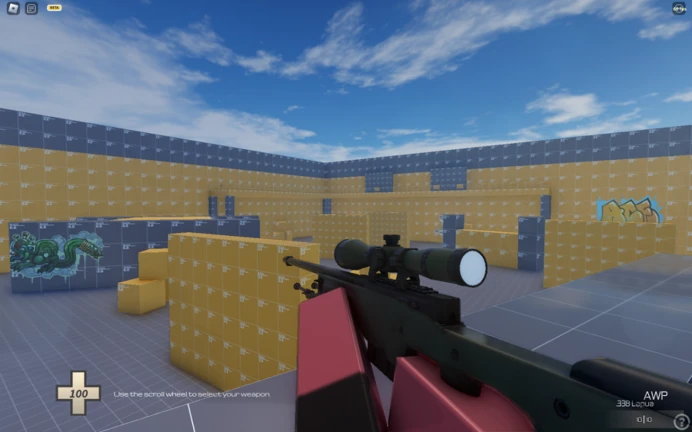
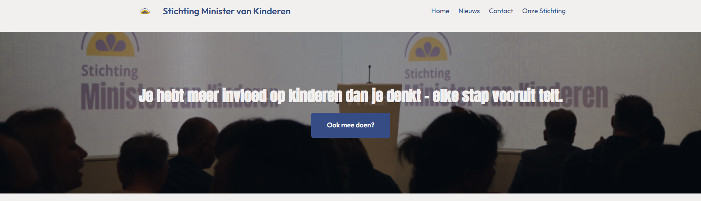

Mijn Projecten

Roblox FPS: Deathmatch
Dit is mijn eerste First Person Shooter game gemaakt in Roblox Studio met LUA. Deze game heeft al 10.000+ spelers gehad.
LUA: 100%

Stichting Minister van Kinderen
Dit is een website gemaakt voor de Stichting Minister van Kinderen. Deze website is gemaakt in HTML, CSS en JavaScript.
HTML: 50%
CSS: 30%
JavaScript: 15%
PHP: 5%